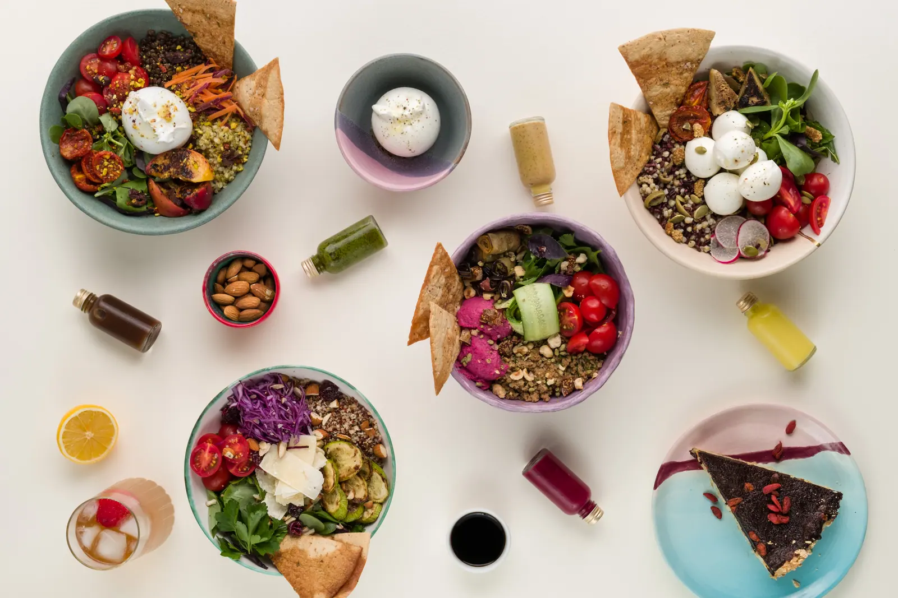
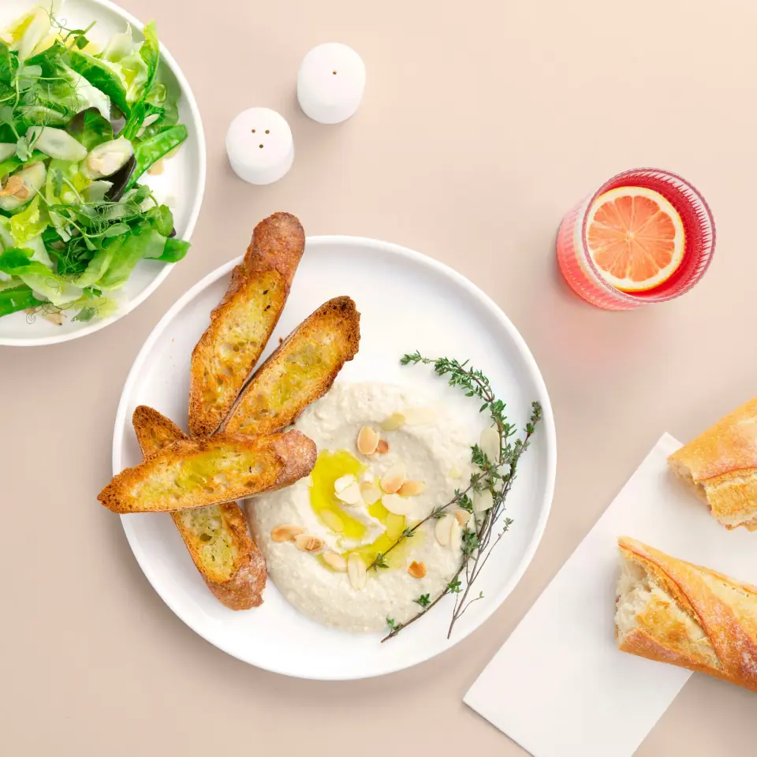

HEALTHY & HAPPY EKOLOJİK KITCHEN · Kadıköy
Bowl'unu seç, sosunu seç, afiyet olsun.
Türkiye ve Avrupa'nın lezzetlerini bir bowl'da birleştiriyoruz: kaliteli İtalyan peynirleri, Fransız usulü soslar ve Antakya'nın ürünleri.
- Şimdi
- SaatlerPzt-Cmt 11:15–20:00
Paz kapalı - AdresCaferağa, Keresteci Aziz Sk. 27A, 34710 Kadıköy/İstanbul
- Telefon0216 330 07 05
Hikâyemiz
Felsefemiz mükemmel olmak değil, her gün biraz daha gelişmek.
Oturup yemek yiyebileceğiniz bir salonumuz yok; ama siparişinizi mutfağımızdan alabilir, ekibimize her zaman merhaba diyebilirsiniz.
Kadıköy
Mutfağımız Caferağa'da
| Pazartesi | 11:15–20:00 |
|---|---|
| Salı | 11:15–20:00 |
| Çarşamba | 11:15–20:00 |
| Perşembe | 11:15–20:00 |
| Cuma | 11:15–20:00 |
| Cumartesi | 11:15–20:00 |
| Pazar | Kapalı |
- Siparişinizi mutfağımızdan gelip alabilirsiniz.
- Yemeksepeti ve Getir Yemek üzerinden de sipariş verebilirsiniz.
